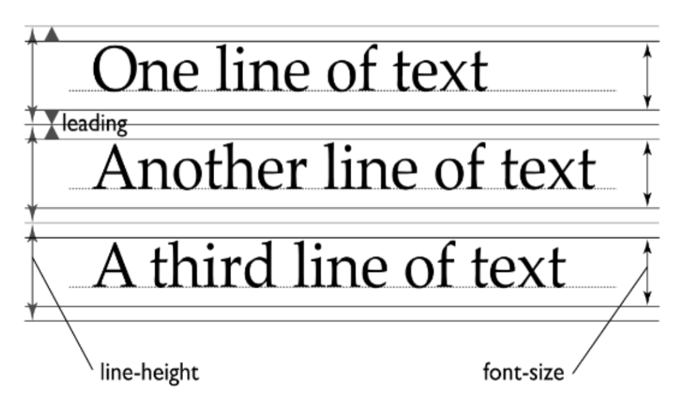

line-height 속성
line-height는 텍스트 라인의 높이를 의미하는 것으로 주로 행간을 제어할 때 사용됩니다.
기본 값 : normal
line-height: normal | number | length | initial | inherit ;
행간을 제어할 때 사용하는 속성이라 해서 줄 간격으로 생각해 오해하기 쉬울 수가 있습니다.
줄 바꿈이 되었을 때, 윗줄의 텍스트 하단과 아랫줄의 텍스트 상단까지의 간격이라고 생각할 수도 있지만,
line-height로 제어되는 부분을 line-box라고도 하며 이는 타이포그래피 구조에서 배웠던 [em 박스] + [상하단의 여백]까지를 의미합니다.
< 속성 값 >

normal
기본값으로 브라우저의 기본 속성을 따릅니다.
폰트에 따라 브라우저에 따라 다르지만 보통 1.2 정도로 할당되어 있습니다.
number
font-size를 기준으로 설정한 숫자만큼 배율로 적용합니다.
length
px, em 등 고정 수치로 할당할 수 있습니다.
%
font-size를 기준으로 설정한 퍼센트만큼 배율로 적용합니다.
주의할 점은, line-height의 값으로 number를 선언할 때와 %로 선언할 때의 차이입니다.
두 값 모두 font-size를 기준으로 동작하기 때문에 1이나 100%를 같은 것이라고 오해할 수 있습니다.
하지만 두 값은 큰 차이가 있습니다. 바로 line-height의 값이 자식 요소로 상속되었을 때의 계산 방식입니다.
number 부모 요소의 숫자 값이 그대로 상속됩니다. 즉, 자식 요소에서도 또 한 번 자식 요소의 font-size를 기준으로 계산된 값을 가집니다.
% 부모 요소에서 %값이 그대로 상속되는 것이 아니고, %에 의해 이미 계산된 px값이 상속됩니다.
아래 코드를 예시로 보자면,
body { font-size: 20px; line-height: 2; } /* line-height = 40px; */
body { font-size: 20px; line-height: 200%; } /* line-height = 40px; */
두 경우 모두 에 똑같이 line-height: 40px이 적용됩니다.
하지만 자식 요소로 가 있다고 생각을 하면 얘기가 달라집니다.
body { font-size: 20px; line-height: 2; } /* line-height = 40px; */
p { font-size: 10px; } /* line-height = 20px; */
body { font-size: 20px; line-height: 200%; } /* line-height = 40px; */
p { font-size: 10px; } /* line-height = 40px; */
이처럼 계산된 값이 아닌 숫자 값을 상속한다는 사실 때문에,
숫자 값을 사용하면 부모 엘리먼트에서 계산된 값 대신 비율을 그대로 상속받을 수 있으므로,
가능하면 단위가 없는 값을 사용하는 것이 좋습니다.